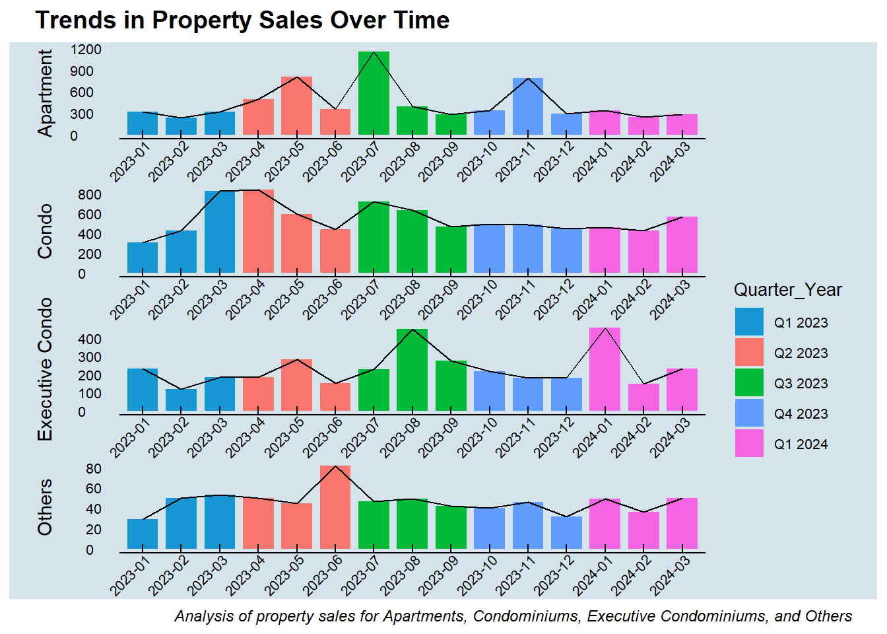

pacman::p_load(tidyverse,ggrepel, patchwork, hrbrthemes, forcats,ggdist, ggridges,
ggthemes,colorspace,lubridate, cowplot)Take Home Exercise 1 - Geospatial Analytics for Public Good
The Task
Assuming the role of a graphical editor of a median company, you are requested to prepare minimum two and maximum three data visualisation to reveal the private residential market and sub-markets of Singapore for the 1st quarter of 2024.
The Data
To accomplish the task, transaction data of REALIS will be used. A complete set of the private residential property transaction data from 1st January 2023 to 31st March 2024 have been downloaded via SMU e-library database service.
Install R Package
1. Importing Data
We will import the data as a first step before proceeding with data cleaning, data wrangling and data ex
Show the code
# Get list of CSV files in the directory
file_list <- list.files(path = "data", pattern = "*.csv", full.names = TRUE)
# Read and bind all CSV files into one data frame
combined_data <- file_list %>%
map_df(read_csv)# View the first few rows of the combined data
head(combined_data)# A tibble: 6 × 21
`Project Name` `Transacted Price ($)` `Area (SQFT)` `Unit Price ($ PSF)`
<chr> <dbl> <dbl> <dbl>
1 THE REEF AT KING'S … 2317000 883. 2625
2 URBAN TREASURES 1823500 883. 2066
3 NORTH GAIA 1421112 1076. 1320
4 NORTH GAIA 1258112 1033. 1218
5 PARC BOTANNIA 1280000 872. 1468
6 NANYANG PARK 5870000 3323. 1767
# ℹ 17 more variables: `Sale Date` <chr>, Address <chr>, `Type of Sale` <chr>,
# `Type of Area` <chr>, `Area (SQM)` <dbl>, `Unit Price ($ PSM)` <dbl>,
# `Nett Price($)` <chr>, `Property Type` <chr>, `Number of Units` <dbl>,
# Tenure <chr>, `Completion Date` <chr>, `Purchaser Address Indicator` <chr>,
# `Postal Code` <chr>, `Postal District` <chr>, `Postal Sector` <chr>,
# `Planning Region` <chr>, `Planning Area` <chr>2. Data Wrangling (High-Level Overview)
First look at our Data
Let’s get an understanding of our column features and their datatypes and see if we need to make any changes with the use of glimpse().
glimpse(combined_data)Rows: 26,806
Columns: 21
$ `Project Name` <chr> "THE REEF AT KING'S DOCK", "URBAN TREASU…
$ `Transacted Price ($)` <dbl> 2317000, 1823500, 1421112, 1258112, 1280…
$ `Area (SQFT)` <dbl> 882.65, 882.65, 1076.40, 1033.34, 871.88…
$ `Unit Price ($ PSF)` <dbl> 2625, 2066, 1320, 1218, 1468, 1767, 1095…
$ `Sale Date` <chr> "01 Jan 2023", "02 Jan 2023", "02 Jan 20…
$ Address <chr> "12 HARBOURFRONT AVENUE #05-32", "205 JA…
$ `Type of Sale` <chr> "New Sale", "New Sale", "New Sale", "New…
$ `Type of Area` <chr> "Strata", "Strata", "Strata", "Strata", …
$ `Area (SQM)` <dbl> 82.0, 82.0, 100.0, 96.0, 81.0, 308.7, 42…
$ `Unit Price ($ PSM)` <dbl> 28256, 22238, 14211, 13105, 15802, 19015…
$ `Nett Price($)` <chr> "-", "-", "-", "-", "-", "-", "-", "-", …
$ `Property Type` <chr> "Condominium", "Condominium", "Executive…
$ `Number of Units` <dbl> 1, 1, 1, 1, 1, 1, 1, 1, 1, 1, 1, 1, 1, 1…
$ Tenure <chr> "99 yrs from 12/01/2021", "Freehold", "9…
$ `Completion Date` <chr> "Uncompleted", "Uncompleted", "Uncomplet…
$ `Purchaser Address Indicator` <chr> "HDB", "Private", "HDB", "HDB", "HDB", "…
$ `Postal Code` <chr> "097996", "419535", "269343", "269294", …
$ `Postal District` <chr> "04", "14", "27", "27", "28", "19", "10"…
$ `Postal Sector` <chr> "09", "41", "26", "26", "79", "54", "27"…
$ `Planning Region` <chr> "Central Region", "East Region", "North …
$ `Planning Area` <chr> "Bukit Merah", "Bedok", "Yishun", "Yishu…
Note
Some key observations of the data using summary():
There seem to be 6 missing data for
Area (SQM)Transacted Price ($)has a min of 440000 and does not have 0 values.Sale Date, is in inappropriate data format.Nett Price($)looks unuseable, we might need to drop itCompletion Datehas missing data in the form of ‘-’, care needs to be taken if we are to use this column
# summary statistics
summary(combined_data) Project Name Transacted Price ($) Area (SQFT) Unit Price ($ PSF)
Length:26806 Min. : 440000 Min. : 322.9 Min. : 138
Class :character 1st Qu.: 1280000 1st Qu.: 721.2 1st Qu.:1384
Mode :character Median : 1660000 Median : 990.3 Median :1762
Mean : 2143286 Mean : 1191.6 Mean :1852
3rd Qu.: 2320000 3rd Qu.: 1302.4 3rd Qu.:2260
Max. :392180000 Max. :144883.4 Max. :5756
Sale Date Address Type of Sale Type of Area
Length:26806 Length:26806 Length:26806 Length:26806
Class :character Class :character Class :character Class :character
Mode :character Mode :character Mode :character Mode :character
Area (SQM) Unit Price ($ PSM) Nett Price($) Property Type
Min. : 30.0 Min. : 1484 Length:26806 Length:26806
1st Qu.: 67.0 1st Qu.:14893 Class :character Class :character
Median : 92.0 Median :18966 Mode :character Mode :character
Mean : 110.5 Mean :19930
3rd Qu.: 121.0 3rd Qu.:24327
Max. :13460.0 Max. :61962
NA's :6
Number of Units Tenure Completion Date
Min. : 1.000 Length:26806 Length:26806
1st Qu.: 1.000 Class :character Class :character
Median : 1.000 Mode :character Mode :character
Mean : 1.005
3rd Qu.: 1.000
Max. :60.000
Purchaser Address Indicator Postal Code Postal District
Length:26806 Length:26806 Length:26806
Class :character Class :character Class :character
Mode :character Mode :character Mode :character
Postal Sector Planning Region Planning Area
Length:26806 Length:26806 Length:26806
Class :character Class :character Class :character
Mode :character Mode :character Mode :character
Dealing with Missing Data
Let’s get the rows that has the missing data!.
Show the code
# Check for the rows with null values
null_check <- combined_data %>%
filter(is.na(`Area (SQM)`))
null_check# A tibble: 6 × 21
`Project Name` `Transacted Price ($)` `Area (SQFT)` `Unit Price ($ PSF)`
<chr> <dbl> <dbl> <dbl>
1 CALDECOTT HILL ESTA… 22250000 10931. 2036
2 CALDECOTT HILL ESTA… 22000000 11083. 1985
3 RAFFLES PARK 25300000 11071. 2285
4 BRADDELL HEIGHTS ES… 20300000 14274. 1422
5 JERVOISVILLE 21020000 11642. 1805
6 N.A. 16100000 14199. 1134
# ℹ 17 more variables: `Sale Date` <chr>, Address <chr>, `Type of Sale` <chr>,
# `Type of Area` <chr>, `Area (SQM)` <dbl>, `Unit Price ($ PSM)` <dbl>,
# `Nett Price($)` <chr>, `Property Type` <chr>, `Number of Units` <dbl>,
# Tenure <chr>, `Completion Date` <chr>, `Purchaser Address Indicator` <chr>,
# `Postal Code` <chr>, `Postal District` <chr>, `Postal Sector` <chr>,
# `Planning Region` <chr>, `Planning Area` <chr>Given the data above, it is impossible for us to understand if there is a systemic reason for the cause of missing data, hence we shall proceed to drop these rows from analysis.The current data now is reduced to 26800 observations from the initial 26806.
Show the code
# Filter out rows where `Area (SQM)` is not missing
combined_data <- combined_data %>%
filter(!is.na(`Area (SQM)`))We are not planning to utilise Completion Date, so we will not make any changes regarding that
Converting Data Types
From the Data Exploration earlier, we found 'Sale Date' to be in chr format, we need to change it to date format to analyze the data properly.
Show the code
combined_data <- combined_data %>%
mutate(`Sale Date` = as.Date(`Sale Date`, format = "%d %b %Y"))
# View the structure of the modified data
str(combined_data)tibble [26,800 × 21] (S3: tbl_df/tbl/data.frame)
$ Project Name : chr [1:26800] "THE REEF AT KING'S DOCK" "URBAN TREASURES" "NORTH GAIA" "NORTH GAIA" ...
$ Transacted Price ($) : num [1:26800] 2317000 1823500 1421112 1258112 1280000 ...
$ Area (SQFT) : num [1:26800] 883 883 1076 1033 872 ...
$ Unit Price ($ PSF) : num [1:26800] 2625 2066 1320 1218 1468 ...
$ Sale Date : Date[1:26800], format: "2023-01-01" "2023-01-02" ...
$ Address : chr [1:26800] "12 HARBOURFRONT AVENUE #05-32" "205 JALAN EUNOS #08-02" "29 YISHUN CLOSE #08-10" "45 YISHUN CLOSE #07-42" ...
$ Type of Sale : chr [1:26800] "New Sale" "New Sale" "New Sale" "New Sale" ...
$ Type of Area : chr [1:26800] "Strata" "Strata" "Strata" "Strata" ...
$ Area (SQM) : num [1:26800] 82 82 100 96 81 ...
$ Unit Price ($ PSM) : num [1:26800] 28256 22238 14211 13105 15802 ...
$ Nett Price($) : chr [1:26800] "-" "-" "-" "-" ...
$ Property Type : chr [1:26800] "Condominium" "Condominium" "Executive Condominium" "Executive Condominium" ...
$ Number of Units : num [1:26800] 1 1 1 1 1 1 1 1 1 1 ...
$ Tenure : chr [1:26800] "99 yrs from 12/01/2021" "Freehold" "99 yrs from 15/02/2021" "99 yrs from 15/02/2021" ...
$ Completion Date : chr [1:26800] "Uncompleted" "Uncompleted" "Uncompleted" "Uncompleted" ...
$ Purchaser Address Indicator: chr [1:26800] "HDB" "Private" "HDB" "HDB" ...
$ Postal Code : chr [1:26800] "097996" "419535" "269343" "269294" ...
$ Postal District : chr [1:26800] "04" "14" "27" "27" ...
$ Postal Sector : chr [1:26800] "09" "41" "26" "26" ...
$ Planning Region : chr [1:26800] "Central Region" "East Region" "North Region" "North Region" ...
$ Planning Area : chr [1:26800] "Bukit Merah" "Bedok" "Yishun" "Yishun" ...Show the code
# View the first few rows of the modified data
head(combined_data)# A tibble: 6 × 21
`Project Name` `Transacted Price ($)` `Area (SQFT)` `Unit Price ($ PSF)`
<chr> <dbl> <dbl> <dbl>
1 THE REEF AT KING'S … 2317000 883. 2625
2 URBAN TREASURES 1823500 883. 2066
3 NORTH GAIA 1421112 1076. 1320
4 NORTH GAIA 1258112 1033. 1218
5 PARC BOTANNIA 1280000 872. 1468
6 NANYANG PARK 5870000 3323. 1767
# ℹ 17 more variables: `Sale Date` <date>, Address <chr>, `Type of Sale` <chr>,
# `Type of Area` <chr>, `Area (SQM)` <dbl>, `Unit Price ($ PSM)` <dbl>,
# `Nett Price($)` <chr>, `Property Type` <chr>, `Number of Units` <dbl>,
# Tenure <chr>, `Completion Date` <chr>, `Purchaser Address Indicator` <chr>,
# `Postal Code` <chr>, `Postal District` <chr>, `Postal Sector` <chr>,
# `Planning Region` <chr>, `Planning Area` <chr>Dealing with Duplicates
Let’s check for duplicates!
Passed initial checks in code chunk below for whole duplicate rows,
Show the code
duplicate <- combined_data %>%
group_by_all() %>%
filter(n()>1) %>%
ungroup()
duplicate# A tibble: 0 × 21
# ℹ 21 variables: Project Name <chr>, Transacted Price ($) <dbl>,
# Area (SQFT) <dbl>, Unit Price ($ PSF) <dbl>, Sale Date <date>,
# Address <chr>, Type of Sale <chr>, Type of Area <chr>, Area (SQM) <dbl>,
# Unit Price ($ PSM) <dbl>, Nett Price($) <chr>, Property Type <chr>,
# Number of Units <dbl>, Tenure <chr>, Completion Date <chr>,
# Purchaser Address Indicator <chr>, Postal Code <chr>,
# Postal District <chr>, Postal Sector <chr>, Planning Region <chr>, …
Note
Proceed to checking for duplicates in the Address column, we seemed to have found 9 duplicated observations. However, they have different "Sale Date". As this is expected, we will ignore the case of duplicate address found here and proceed ahead.
duplicates <- combined_data[duplicated(combined_data$Address), ]
filtered_data <- combined_data[combined_data$Address %in% duplicates$Address, ]3. Data Exploration
Dealing with Categorical Data
Let’s get an understanding of the number of unique categories in our categorical data.
Show the code
# Filter character columns
char_columns <- Filter(is.character, combined_data)
# Count unique categories for each character column
unique_counts <- sapply(char_columns, function(col) length(unique(col)))
# Display the unique counts
print(unique_counts) Project Name Address
2209 26791
Type of Sale Type of Area
3 2
Nett Price($) Property Type
37 6
Tenure Completion Date
581 80
Purchaser Address Indicator Postal Code
3 6302
Postal District Postal Sector
28 72
Planning Region Planning Area
5 41
Note
Some key observations of the data using summary():
Columns such as
Type of Sale,Type of Area,Property Type,Planning Region,Purchaser Address Indicatorhas few categories and require minimal transformations.Columns such as
Project Name,Address,Tenure,Completion Date,Postal District,Postal Code,Planning Areahas many categories and might require grouping to be utilised effectively.
Define a function to count and print unique categories for a given column.
Show the code
count_unique_categories <- function(data, column_name) {
cat("**", column_name, "**\n", sep = "")
category_counts <- table(data[[column_name]])
sorted_counts <- sort(category_counts, decreasing = TRUE)
print(sorted_counts)
}Call the function for each column
Show the code
count_unique_categories(combined_data, 'Type of Sale')**Type of Sale**
Resale New Sale Sub Sale
16611 8644 1545 Show the code
count_unique_categories(combined_data, 'Type of Area')**Type of Area**
Strata Land
25236 1564 Show the code
count_unique_categories(combined_data, 'Property Type')**Property Type**
Apartment Condominium Executive Condominium
10772 10643 3534
Terrace House Semi-Detached House Detached House
1100 524 227 Show the code
count_unique_categories(combined_data, 'Purchaser Address Indicator')**Purchaser Address Indicator**
Private HDB N.A
15348 8719 2733 Show the code
count_unique_categories(combined_data, 'Postal District')**Postal District**
19 15 23 10 18 21 26 27 05 09 16 14 22 03 11 20
2920 2762 2662 1681 1480 1449 1365 1270 1195 1003 998 940 899 875 823 696
28 13 12 17 04 25 07 02 08 01 24 06
568 566 548 357 338 322 303 295 277 181 18 9 Show the code
count_unique_categories(combined_data, 'Planning Region')**Planning Region**
Central Region North East Region West Region East Region
12196 5036 4300 3643
North Region
1625 Show the code
count_unique_categories(combined_data, 'Planning Area')**Planning Area**
Bukit Timah Bedok Ang Mo Kio Marine Parade
2343 1752 1558 1551
Bukit Batok Geylang Hougang Tampines
1314 1227 1209 1055
Serangoon Queenstown Novena Sengkang
980 945 929 836
Pasir Ris Bukit Panjang Yishun Kallang
832 828 776 681
Toa Payoh Clementi Tanglin Bukit Merah
657 647 611 610
Choa Chu Kang Downtown Core Jurong East Sembawang
594 587 531 502
Bishan Punggol River Valley Jurong West
460 453 374 368
Newton Woodlands Outram Rochor
348 320 251 209
Singapore River Southern Islands Orchard Museum
140 106 102 65
Mandai Tengah Changi Sungei Kadut
25 18 3 2
Paya Lebar
1
Note
Some key observations of Purchaser Address Indicator
Note that some information regarding
Purchaser Address Indicatoris not provided at all and is labelled asN.Aand this amounts to2733rows of data having such a phenomena.Further preprocessing needs to be taken if this data is required to be utilised.
Dealing with Continuous Data
Let’s get an understanding of the data range in our Continuous data.
Show the code
# Filter character columns
numeric_columns <- Filter(is.numeric, combined_data)
# Calculate the range of values for each numeric column
column_ranges <- sapply(numeric_columns, function(x) range(x, na.rm = TRUE))
# Print the range for each column
print(column_ranges) Transacted Price ($) Area (SQFT) Unit Price ($ PSF) Area (SQM)
[1,] 440000 322.92 138 30
[2,] 392180000 144883.44 5756 13460
Unit Price ($ PSM) Number of Units
[1,] 1484 1
[2,] 61962 60Show the code
summary(numeric_columns) Transacted Price ($) Area (SQFT) Unit Price ($ PSF) Area (SQM)
Min. : 440000 Min. : 322.9 Min. : 138 Min. : 30.0
1st Qu.: 1280000 1st Qu.: 721.2 1st Qu.:1384 1st Qu.: 67.0
Median : 1660000 Median : 990.3 Median :1762 Median : 92.0
Mean : 2139028 Mean : 1189.2 Mean :1852 Mean : 110.5
3rd Qu.: 2320000 3rd Qu.: 1302.4 3rd Qu.:2260 3rd Qu.: 121.0
Max. :392180000 Max. :144883.4 Max. :5756 Max. :13460.0
Unit Price ($ PSM) Number of Units
Min. : 1484 Min. : 1.000
1st Qu.:14893 1st Qu.: 1.000
Median :18966 Median : 1.000
Mean :19930 Mean : 1.005
3rd Qu.:24327 3rd Qu.: 1.000
Max. :61962 Max. :60.000
Note
Some key observations of the observed ranges
- It is evident from the wide range of all the numeric column features that criteria for analysis needs to be precisely set to allow for an accurate analysis
4. Data Visualisation (1)
Performing the necessary and additional preprocessing before visualisation
We first added some filters to the dataset required to provide an accurate analysis. This includes:
Number of Units== 1 as we are only interested in individual salesTenureof 99 Years as this is the most common lease type
We named the resulting dataframe after applying the filters as resale_data
Show the code
# Define the new labels for each category
new_labels <- c("Apartment", "Condo", "Executive Condo", "Terrace", "Semi-Detached", "Detached")
combined_data = combined_data %>%
mutate(`Property Type` = recode(`Property Type`,
"Apartment" = "Apartment",
"Condominium" = "Condo",
"Executive Condominium" = "Executive Condos",
"Terrace House" = "Terrace",
"Semi-Detached House" = "Semi-Detached",
"Detached House" = "Detached"))
# Filter Conditions
resale_data <- combined_data %>%
filter(`Number of Units` == 1)%>%
filter(grepl("99 yrs", Tenure, ignore.case = TRUE))5. Data Visualisation (2)
Performing the necessary and additional preprocessing before visualisation
We can further explore the trend of $PSF over different time intervals like months and quarters. First, we need to generate extra date-related variables including Quarter, Month, and Year. Additionally, we’ve introduced a new variable called Quarter Year.
Show the code
resale_data <- resale_data %>%
mutate(Year = year(`Sale Date`),
Quarter = quarter(`Sale Date`),
Month = month(`Sale Date`),
Quarter_Year = paste0("Q",quarter(`Sale Date`), " ",year(`Sale Date`))) %>%
mutate(
Quarter_Year = factor(Quarter_Year,
levels = c("Q1 2023",
"Q2 2023", "Q3 2023", "Q4 2023", "Q1 2024"))
)Second, monthly average unit prices are calculated for different property types (Apartment, Condo, Executive Condos, and other types like Terrace, Semi-Detached, and Detached). Each calculation involves filtering the resale_data based on property type, converting the Sale Date column to Date type, grouping the data by quarter-year and year-month, and then summarizing the average unit price for each group. Finally, the results are stored in separate data frames (Apartment_monthly_avg, Condo_monthly_avg, ExecCondo_monthly_avg, and Others_monthly_avg).
Show the code
# Calculate monthly average unit price
Apartment_monthly_avg <- resale_data %>%
filter(`Property Type`=="Apartment") %>%
mutate(`Sale Date` = as.Date(`Sale Date`)) %>%
group_by(Quarter_Year, Year_Month = format(`Sale Date`, "%Y-%m")) %>%
summarise(Count = n())
Condo_monthly_avg <- resale_data %>%
filter(`Property Type`=="Condo") %>%
mutate(`Sale Date` = as.Date(`Sale Date`)) %>%
group_by(Quarter_Year, Year_Month = format(`Sale Date`, "%Y-%m")) %>%
summarise(Count = n())
ExecCondo_monthly_avg <- resale_data %>%
filter(`Property Type`=="Executive Condos") %>%
mutate(`Sale Date` = as.Date(`Sale Date`)) %>%
group_by(Quarter_Year, Year_Month = format(`Sale Date`, "%Y-%m")) %>%
summarise(Count = n())
Others_monthly_avg <- resale_data %>%
filter(`Property Type` %in% c("Terrace", "Semi-Detached", "Detached")) %>%
mutate(`Sale Date` = as.Date(`Sale Date`)) %>%
group_by(Quarter_Year, Year_Month = format(`Sale Date`, "%Y-%m")) %>%
summarise(Count = n())Finally, we create column and line charts to visualize the trends in the property sales over time for different property types. It starts by plotting separate charts for apartments, condos, executive condos, and other property types. Each plot represents the average unit price per month, with columns indicating different quarter-years.
The code then combines all the individual plots into one comprehensive visualization using the plot_grid() function.
Show the code
# Plotting column chart for monthly apartment property sales
plot1 <- ggplot(Apartment_monthly_avg,
aes(x = Year_Month,
y = Count,
fill = Quarter_Year)) +
geom_col(width = 0.8) +
geom_line(aes(group = 1), color = "black") +
labs(x = NULL,
y = "Apartment") +
scale_fill_manual(values = c("#1696d2", "#f8766d", "#00ba38", "#619cff", "#f564e3", "#a2daff")) +
theme_economist() +
theme(legend.position = "none",
axis.text.y = element_text(angle = 0, size = 8, color = "black"), # Adjust y-axis labels
axis.text.x = element_text(angle = 45, hjust = 1, vjust = 1, size = 8, color = "black", margin = margin(t = 0, r = 0, b = 0, l = 0)), # Adjust x-axis labels
axis.title.y = element_text(margin = margin(t = 0, r = 10, b = 0, l = 0)) ,
plot.margin = margin(0.1, 0.5, 0, 0.5, "cm"), # Set margins
panel.grid.major = element_blank(), # Remove major gridlines
panel.grid.minor = element_blank(), # Remove minor gridlines
panel.spacing = unit(0.01, "lines"))
# Plotting column chart for Condo monthly property sales
plot2 <- ggplot(Condo_monthly_avg,
aes(x = Year_Month,
y = Count,
fill = Quarter_Year)) +
geom_col(width = 0.8) +
geom_line(aes(group = 1), color = "black") +
labs(x = NULL,
y = "Condo") +
scale_fill_manual(values = c("#1696d2", "#f8766d", "#00ba38", "#619cff", "#f564e3", "#a2daff")) +
theme_economist()+
theme(legend.position = "none",
axis.text.y = element_text(angle = 0, size = 8, color = "black"), # Adjust y-axis labels
axis.text.x = element_text(angle = 45, hjust = 1, vjust = 1, size = 8, color = "black", margin = margin(t = 0, r = 0, b = 0, l = 0)), # Adjust x-axis labels
axis.title.y = element_text(margin = margin(t = 0, r = 10, b = 0, l = 0)),
plot.margin = margin(0, 0.5, 0, 0.5, "cm"), # Set margins
panel.grid.major = element_blank(), # Remove major gridlines
panel.grid.minor = element_blank(), # Remove minor gridlines
panel.spacing = unit(0, "lines"))
# Plotting column chart for Executive Condo monthly property sales
plot3 <- ggplot(ExecCondo_monthly_avg,
aes(x = Year_Month,
y = Count,
fill = Quarter_Year)) +
geom_col(width = 0.8) +
geom_line(aes(group = 1), color = "black") +
labs(x = NULL,
y = "Executive Condo") +
scale_fill_manual(values = c("#1696d2", "#f8766d", "#00ba38", "#619cff", "#f564e3", "#a2daff")) +
theme_economist()+
theme(
legend.position = "right", # Place legend on the right side
legend.direction = "vertical", # Vertical legend
legend.title = element_text(size = 10), # Legend title
legend.text = element_text(size = 8), # Smaller legend text
axis.text.y = element_text(angle = 0, size = 8, color = "black"), # Adjust y-axis labels
axis.text.x = element_text(angle = 45, hjust = 1, vjust = 1, size = 8, color = "black", margin = margin(t = 0, r = 0, b = 0, l = 0)), # Adjust x-axis labels
axis.title.y = element_text(margin = margin(t = 0, r = 10, b = 0, l = 0)),
plot.margin = margin(0, 0.5, 0, 0.5, "cm"), # Set margins
panel.grid.major = element_blank(), # Remove major gridlines
panel.grid.minor = element_blank(), # Remove minor gridlines
panel.spacing = unit(0, "lines"))
# Plotting column chart for "Terrace"Others" monthly property sales
plot4 <- ggplot(Others_monthly_avg,
aes(x = Year_Month,
y = Count,
fill = Quarter_Year)) +
geom_col(width = 0.8) +
geom_line(aes(group = 1), color = "black") +
labs(x = NULL,
y = "Others") +
scale_fill_manual(values = c("#1696d2", "#f8766d", "#00ba38", "#619cff", "#f564e3", "#a2daff")) +
theme_economist() +
theme(legend.position = "none",
axis.text.y = element_text(angle = 0, size = 8, color = "black"), # Adjust y-axis labels
axis.text.x = element_text(angle = 45, hjust = 1, vjust = 1, size = 8, color = "black", margin = margin(t = 0, r = 0, b = 0, l = 0)), # Adjust x-axis labels
axis.title.y = element_text(margin = margin(t = 0, r = 10, b = 0, l = 0)),
plot.margin = margin(0, 0.5, 0, 0.5, "cm"), # Set margins
panel.grid.major = element_blank(), # Remove major gridlines
panel.grid.minor = element_blank(), # Remove minor gridlines
panel.spacing = unit(0, "lines"))
allplots <- plot1/plot2/plot3/plot4
# Title and subtitle
title <- "Trends in Property Sales Over Time"
subtitle <- "Analysis of property sales for Apartments, Condominiums, Executive Condominiums, and Others"
# Add title and subtitle
allplots_with_title <- allplots + plot_annotation(
title = title,
caption = subtitle,
theme = theme(plot.title = element_text(size = 14, face = "bold"),
plot.caption = element_text(size = 9, face = "italic"))
)
# Print combined plot with title and subtitle
print(allplots_with_title)
General Trend:
- Results show that most of the Property Types’ sales tend to spike at least once between end of Q2 2023 to August 2023.
- Property Sales tend to be lower during Q4 2023 and start of Q1 2024.
- Property Sales tend to peak for a month or so instead of a few months at a time.
Specific Property Trends:
- Apartment and Executive Condominium sales tend to be more volatile with higher variation throughout the year.
- Condominium sales trend is quite flat throughout the year from Q1 2023 to Q1 2024.
- “Others” sales trend is also quite flat throughout the year from Q1 2023 to Q1 2024 with the exception of June 2023.
6. Data Visualisation (3)
In this section, we want to figure out which property type does the majority of the buyers convert from and to which property type too. This can be achieved by analyzing the Purchase Address Indicator
::: panel-tabset ## 6.1. Data Prep
Performing the necessary and additional preprocessing before visualisation
Show the code
purchaseindicator_allsales <- combined_data %>%
filter(`Number of Units` == 1)%>%
filter(grepl("99 yrs", Tenure, ignore.case = TRUE)) %>%
filter(!(`Purchaser Address Indicator`=="N.A")) %>%
group_by(`Property Type`,`Purchaser Address Indicator`) %>%
summarise(Count = n())6.1. Data Visualisation
# Plot a stacked bar chart for 'Apartment' sales
stacked_bar <- ggplot(purchaseindicator_allsales, aes(x = `Property Type`, y = Count, fill = `Purchaser Address Indicator`)) +
geom_bar(stat = "identity") +
labs(x = NULL, y = "Count", fill = "Purchaser Address Indicator") +
scale_fill_manual(values = c("Private" = "#1696d2", "HDB" = "#f8766d")) + # Adjust fill colors
theme_economist() +
theme(
legend.position = "right", # Place legend on the right side
legend.direction = "vertical", # Vertical legend
axis.text.x = element_text(angle = 45, hjust = 1, vjust = 1, size = 8, color = "black"), # Adjust x-axis labels
axis.title.y = element_text(margin = margin(t = 0, r = 10, b = 0, l = 0)), # Adjust y-axis title margin
plot.margin = margin(0.1, 0.5, 0, 0.5, "cm"), # Set margins
panel.grid.major = element_blank(), # Remove major gridlines
panel.grid.minor = element_blank(), # Remove minor gridlines
panel.spacing = unit(0.01, "lines")
)
# Print the stacked bar chart
print(stacked_bar)
From our findings:
Most of the HDB converters purchase Apartment, Condos and Executive Condos. Few purchased Detached , semi-Detached and Terrace Houses
Also, most of the house buyers are past private property owners with the exception for executive condos.